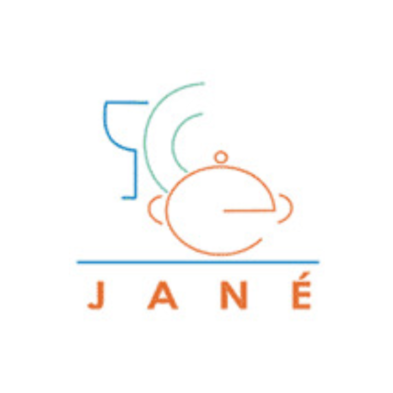

<mat-toolbar id="header" color="primary">
  <div class="container">
    <div class="left">
      <button mat-icon-button aria-label="menu" (click)="inputSideNav.toggle()">
        <mat-icon>menu</mat-icon>
      </button>
      <button mat-icon-button aria-label="inicio" routerLink="/inicio">
        
        Menaje Hogar Jané
      </button>
    </div>
    <div class="right">
      <button mat-icon-button aria-label="buscador" routerLink="/buscador">
        <mat-icon>search</mat-icon>
      </button>
    </div>
  </div>
</mat-toolbar>
